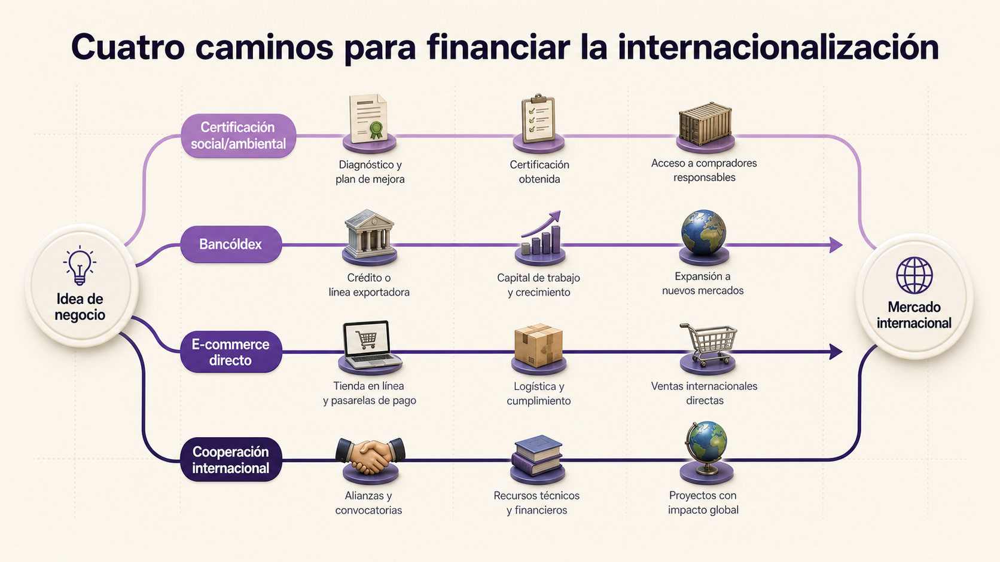

Financiamiento: conseguir los recursos que vuelven realidad la oportunidad.
Los Negocios Internacionales son estratégicos: no se quedan en la parte operativa del comercio exterior, también gestionan recursos y contribuyen a elevar la competitividad de los territorios para que puedan diversificar y ampliar la oferta exportable.
Articulo estrategias de financiamiento mediante proyectos sociales, organismos de fomento, comercio electrónico y cooperación internacional para volver viables oportunidades de negocio en pequeños productores.
Las certificaciones abren puertas que un buen producto solo no abre.
Diseñar proyectos sociales y comunitarios permite obtener certificaciones como Buenas Prácticas Agrícolas, Buenas Prácticas de Manufactura o Comercio Justo, que garantizan la inserción de nuestros productos agrícolas en los mercados internacionales.
Un caficultor en Caldas produce un café excelente. Sin certificación, lo vende a $8.000 el kilo a un acopiador local. Con certificación Comercio Justo + Orgánico, ese mismo café se vende a $18.000 el kilo directamente a una cooperativa europea. La calidad no cambió: cambió la documentación que prueba cómo se produjo. Por eso las certificaciones no son trámites: son multiplicadores de margen.
Buenas Prácticas Agrícolas
Garantizan inocuidad alimentaria, sostenibilidad ambiental y bienestar del trabajador agrícola. Indispensables para exportar frutas, verduras y café especial.
Buenas Prácticas de Manufactura
Estandarizan procesos de producción, almacenamiento y distribución. Son requisito para entrar a cadenas industriales y mercados regulados.
Fair Trade
Asegura precio mínimo justo, condiciones laborales dignas e inversión en comunidad. Abre el mercado premium europeo y estadounidense de consumo consciente.
Asesorar y gestionar recursos ante organismos de fomento.
El negociador identifica convocatorias para acceder a recursos que mejoran las condiciones de producción y le permiten a los pequeños productores internacionalizarse y entrar a mercados a los que solos no llegarían.
Bancóldex es el banco de desarrollo empresarial y comercio exterior de Colombia. No reemplaza a la banca tradicional: ofrece líneas de crédito con condiciones preferenciales (plazos, tasas, periodos de gracia) específicamente diseñadas para empresas que exportan o quieren internacionalizarse.
Además, abre periódicamente convocatorias no reembolsables para cofinanciar certificaciones, asistencia técnica, participación en ferias internacionales y proyectos de modernización productiva. Estar pendiente de esas convocatorias es parte del trabajo del negociador asesor.
Banco de Desarrollo Empresarial de Colombia
Líneas de crédito, convocatorias y servicios financieros para empresas exportadoras y proyectos de internacionalización.
bancoldex.com
Vender directamente al consumidor internacional cambia las reglas.
El comercio electrónico permite diseñar estrategias de mercadeo para promocionar productos de la oferta exportable y lograr negociaciones más justas, beneficiosas y equilibradas para los pequeños productores.
Tradicionalmente, un pequeño productor dependía de varios intermediarios para llegar al consumidor final: acopiador, exportador, importador, distribuidor, retail. Cada eslabón se quedaba una parte del margen.
El e-commerce y los marketplaces especializados (Amazon Handmade, Etsy, Faire, Ankorstore) abrieron una vía directa: el productor llega al cliente final con un margen sustancialmente mayor y construye marca propia. La contrapartida es asumir responsabilidades nuevas: fotografía, atención al cliente, logística de paquetería internacional y manejo de devoluciones.
Recursos no reembolsables para proyectos que la banca no financia.
La participación en convocatorias de cooperación internacional permite acceder a recursos que no se pagan, para proyectos con impacto social, ambiental o de desarrollo regional que la banca tradicional rara vez apoya.
Gestión y uso eficiente de recursos
Identificar qué se necesita, cómo se va a medir el impacto y qué reportes exige el cooperante. Sin rendición de cuentas, no hay segunda convocatoria.
Iniciativas gubernamentales
Aprovechar programas estatales de internacionalización: Procolombia, MinComercio, Cancillería y agencias regionales suelen tener líneas activas.
Convocatorias internacionales
Participar en convocatorias de USAID, GIZ, AECID, Unión Europea, BID y agencias de Naciones Unidas que apoyan desarrollo productivo en países como Colombia.
El negociador no solo cierra ventas: levanta los recursos para que la venta sea posible.
Un pequeño productor de cacao en el Pacífico puede tener un producto excepcional y un mercado europeo interesado, y aun así fracasar si no consigue los recursos para certificarse en orgánico, mejorar su planta de beneficio y pagar el primer contenedor mientras le pagan. Articular esos recursos —de Bancóldex, de Procolombia, de cooperación internacional— es el trabajo que distingue al negociador estratégico del operativo.

Cuatro caminos para conseguir los recursos
No todo proyecto de internacionalización se financia igual. Esta infografía traza cuatro rutas paralelas, cada una con sus hitos: certificación social/ambiental, Bancóldex, e-commerce directo y cooperación internacional.
Lo común es combinar varias: una certificación inicial te abre el mercado, Bancóldex financia el capital de trabajo, y la cooperación cubre la asistencia técnica. El negociador estratégico arma esa combinación, no escoge una sola.
Un pequeño productor de cacao en el Pacífico colombiano necesita $150 millones para certificar su finca en orgánico, comprar maquinaria de beneficio mejor y pagar el primer contenedor a Bélgica. No tiene historial bancario. ¿Cómo arma su financiamiento?
Combinando varias fuentes, no buscando una sola fuente que lo cubra todo.
-
Cooperación internacional
USAID o Unión Europea con programas de paz en el Pacífico para cubrir la certificación orgánica.
Recursos no reembolsables. -
Bancóldex o iNNpulsa
Convocatoria para cofinanciar la maquinaria de beneficio.
Esquema reembolsable con tasa preferencial. -
Línea de crédito de exportación
Bancóldex para el capital de trabajo del primer contenedor.
Plazo corto, garantizado contra la factura de exportación.
Ningún productor pequeño consigue $150M de un solo lado. La habilidad del negociador es combinar las fuentes para que cada peso venga del instrumento que mejor encaja.
Diseña la hoja de ruta financiera de tu oportunidad
Toma la oportunidad que vienes trabajando desde el inicio y construye una hoja de ruta de financiamiento: qué certificaciones necesitas y cómo las pagas; qué línea de Bancóldex aplica a tu caso; si el e-commerce puede ser el canal de salida; qué convocatoria de cooperación internacional encaja con tu sector. Esta es la base del reto interactivo del programa.